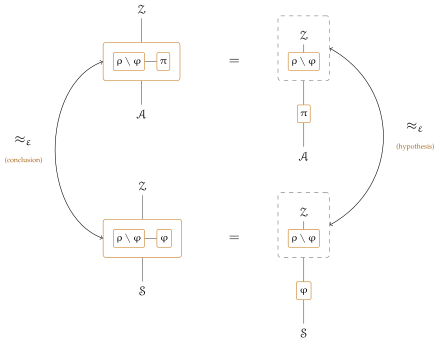

UC for Gamers

| AI: | Claude Opus 5 (1M context) |
| Prompts: | Pooya Farshim |
| Reviewers: | Nobody |
| Date: | August 16, 2026 |
Universal composability is usually written in a mixture of prose and code, which makes UC research hard to falsify, and harder still to test or verify formally. Following the code-based style of property-based security, we set out a rigorous language for programming UC functionalities: identities and access control are data, wrappers enforce them, corruption is a register that every interface reads, and an execution is a handler passing a single token. Emulation is then defined over explicit machine classes with concrete bounds — no security parameter, no asymptotics — and the composition toolkit follows: substitution, parallel composition and a completeness theorem for the dummy adversary — all three corollaries of one absorption lemma, which moves a protocol or an adversary into the environment and is an exact regrouping of a single execution rather than a comparison of two — with transitivity coming free from the metric itself. Game-based properties turn out to be functionalities too, and they transfer along emulation. A signature functionality, a global clock and a bounded-delay network show the style at work. We hope this helps apply formal methods to UC, and ultimately give a formal UC proof.